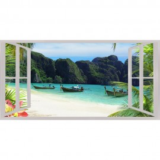
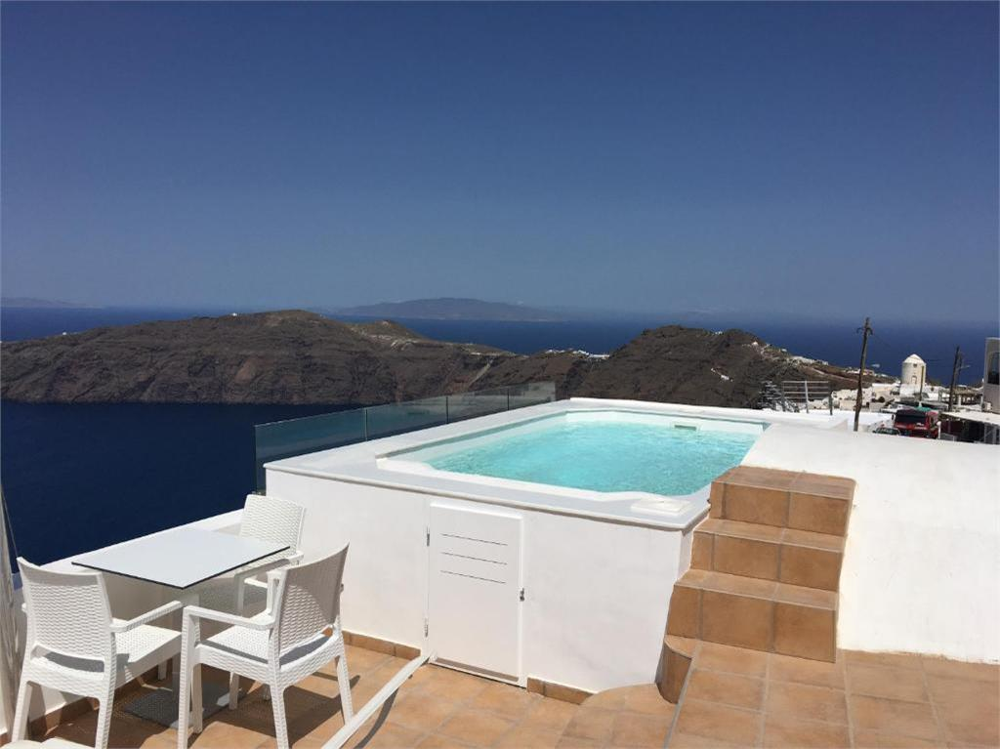
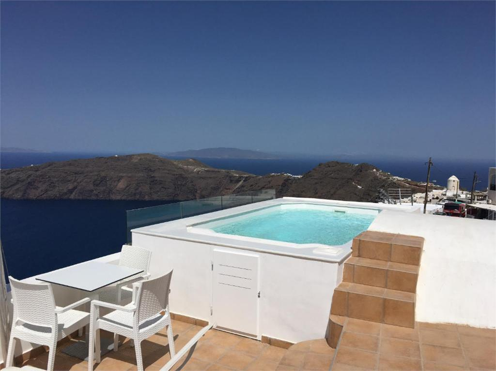

langas - Vikižodynas
2020.10.27 11:56
langas
Puslapis iš Vikižodyno, laisvojo žodyno. Jump to navigation Jump to search Langas Vikipedija Laisvojoje enciklopedijoje yra straipsnis: LangasTurinys
1 Lietuvių kalba 1.1 Daiktavardis 1.1.1 Etimologija 1.1.2 Išraiškos arba posakiai 1.1.3 VertimaiLietuvių kalba [ taisyti ]
Daiktavardis [ taisyti ]
langas ( dkt. , vyr. g. , pagr. f. , vns. vard. ) Daiktavardis Pagrindinė forma : langas vienaskaita daugiskaita vard. langas langai kilm. lango langų naud. langui langams gal. langą langus įnag. langu langais viet. lange languose šauksm. lange langai Skiemenys : lán-gaslangas
( Namai ) įstiklinta vieta šviesai įeiti.
Etimologija [ taisyti ]
Žodžio kilmė nežinoma. Jeigu žinote žodžio etimologiją, maloniai kviečiame ją parašyti čia . Instrukcijas, kaip nurodyti etimologijas rasite čia .
Išraiškos arba posakiai [ taisyti ]
langas : ( Namai ) belangis langadaužis langadirbys languotas languoti palangė užlangė užlangisVertimai [ taisyti ]
langas : ( Namai ) Afrikanų kalba : venster (af) Airių kalba : fuinneog (ga) ( mot. g. ) Albanų kalba : dritare (sq) aliutorių kalba : укнун (alr) (uknun) amamių kalba : たハヤド (ams) (θaha'jado) Amharų kalba : መስኮት (am) (mäsəkotə) Anglų kalba : window (en) Arabų kalba : شباك (ar) ( vyr. g. ) (shubbaak), نافذة (ar) ( mot. g. ) (naafidha) Aragoniečių kalba : finestra (an) ( mot. g. ) Armėnų kalba : պատուհան (hy) (patuhan), լուսամուտ (hy) (lusamut) Arumunų kalba : firidã (rup) Azerbaidžaniečių kalba : pəncərə (az) Baltarusių kalba : акно (be) ( bev. g. ) (aknó) Baskų kalba : leiho (eu) Baškirų kalba : тәҙрә (ba) (təźrə) Bengalų kalba : জানালা (bn) (jānālā) Bretonų kalba : prenestr (br) ( vyr. g. ) Bulgarų kalba : прозорец (bg) ( vyr. g. ) (prozórec) Čamikurų kalba : wentana (ccc) Čekų kalba : okno (cs) ( bev. g. ) čiukčių kalba : к'эгычьын (ckt) (qerɣǝsʔǝn) Čiuvašų kalba : чӳрече (cv) (çüreçe) Čečėnų kalba : кор (ce) (kor) Danų kalba : vindue (da) ( bev. g. ), rude (da) ( bendr. g. ) Esperanto : fenestro (eo) Estų kalba : aken (et) ( mot. g. ) Fryzų kalba : ramte (fy) Gagaūzų kalba : pencerä (gag) Galisų kalba : xanela (gl) , fiestra (gl) ( mot. g. ), ventá (gl) ( mot. g. ) Graikų kalba : παράθυρο (el) ( bev. g. ) (paráthyro) Kartvelų kalba : ფანჯარა (ka) (fanǰara) Haičio kreolų kalba : fenèt (ht) Chakasų kalba : кӧзенек (kjh) (közenek) Hebrajų kalba : חַלּוֹן (he) ( vyr. g. ) (xalon) Hindi : खिड़की (hi) ( mot. g. ) (khiṛkī) Ido : fenestro (io) Indoneziečių kalba : ventilasi (id) , jendela (id) Islandų kalba : gluggi (is) ( vyr. g. ) Ispanų kalba : ventana (es) ( mot. g. ) Italų kalba : finestra (it) ( mot. g. ) Jakutų kalba : түннүк (sah) (tünnük) Japonų kalba : 窓 (ja) ( まど (ja) , mado) Kalmukų kalba : терз (xal) (terz) Karačiajų-balkarų kalba : терезе (krc) (tereze) Katalonų kalba : finestra (ca) ( mot. g. ) Kazachų kalba : терезе (kk) (tereze) Khmerų kalba : បង្អួច (km) (bongooich) Kinų kalba : Kinų mandarinų kalba : 窗戶 (cmn) , 窗户 (cmn) (chuānghù), 窗口 (cmn) (chuāngkǒu), 窗子 (cmn) (chuāngzi) Kirgizų kalba : терезе (ky) (tereze) Korėjiečių kalba : 창 (ko) (chang) Krymo totorių kalba : pencere (crh) Kumykų kalba : терезе (kum) (tereze) Kurdų kalba : پهنجهره (ku) Latgalių kalba : lūgs (ltg) ( vyr. g. ) Žemaičių kalba : longs (sgs) ( vyr. g. ) Latvių kalba : logs (lv) ( vyr. g. ) Lenkų kalba : okno (pl) ( bev. g. ) Lotynų kalba : fenestra (la) ( mot. g. ) Lyvių kalba : läb (liv) Makedonų kalba : прозорец (mk) ( vyr. g. ) (prózorec), прозор (mk) ( vyr. g. ) (prózor), окно (mk) ( bev. g. ) (ókno), пенџере (mk) ( bev. g. ) (péndžere), пенџер (mk) ( vyr. g. ) (péndžer) Maltiečių kalba : tieqa (mt) Maorių kalba : mataaho (mi) , matapihi (mi) , wini (mi) Marathų kalba : खिडकी (mr) (khi.dkī) Mjanmų kalba : nurodykite žodžio langas vertimą(-us) (Mjanmų kalba), žr. Mongolų kalba : цонх (mn) (tsonh) Norvegų kalba : vindu (no) ( bev. g. ) Oksitanų kalba : fenèstra (oc) ( mot. g. ) Nyderlandų kalba : raam (nl) ( bev. g. ), venster (nl) ( bev. g. ), ruit (nl) ( mot. g. )Šablonas:mhrv1 тӧрза (mhr) (törza)
Persų kalba : پنجره (fa) (panjere) pietų Altajaus kalba : кӧзнӧк (alt) (köznök) Pietų minų kalba : 窗仔門 (nan) (thang-á-mn̂g), 窗仔门 (nan) (thang-á-mn̂g), thang-á-mn̂g (nan) pietų sotų kalba : fenstere (st) Portugalų kalba : janela (pt) ( mot. g. ) Prancūzų kalba : fenêtre (fr) ( mot. g. ) Rumunų kalba : fereastră (ro) ( mot. g. ) Buriatų kalba : сонхо (bua) (sonxo) Rusų kalba : окно (ru) ( bev. g. ) (oknó) Senovės skandinavų kalba : vindauga (non) ( bev. g. ) Serbų-kroatų kalba : Kirilica: прозор (sh) ( vyr. g. ), окно (sh) ( bev. g. ), обло (sh) ( bev. g. ), , пенџер (sh) ( vyr. g. ) Lotyniškai: prozor (sh) ( vyr. g. ), okno (sh) ( bev. g. ), oblo (sh) ( bev. g. ), pendžer (sh) ( vyr. g. ) Slovakų kalba : okno (sk) ( bev. g. ), oblok (sk) ( vyr. g. ) Slovėnų kalba : okno (sl) ( bev. g. ) Suomių kalba : ikkuna (fi) Suahilių kalba : dirisha (sw) Škotų kalba : windae (sco) Škotų gėlų kalba : uinneag (gd) ( mot. g. ) šorų kalba : кӧзнек (cjs) (köznek) Švedų kalba : fönster (sv) ( bev. g. ), ruta (sv) , vindöga (sv) , glugg (sv) Tadžikų kalba : тиреза (tg) (tireza) Tajų kalba : หน้าต่าง (th) (nâa dtàang) taosų kalba : łòxwóloną (twf) Telugų kalba : కిటికీ (te) (kiTikee) Tibetiečių kalba : སྒེ་ཁུང་། (bo) (sge khung) Totorių kalba : täräzä (tt) Turkmėnų kalba : penjire (tk) Turkų kalba : pencere (tr) , cam (tr) Tuvių kalba : көзенек (tyv) (közenek) Ukrainiečių kalba : вікно (uk) ( bev. g. ) (viknó) Urdu : کھڑکی (ur) ( mot. g. ) (khi.rkī) Uzbekų kalba : deraza (uz) Valų kalba : ffenest (cy) ( mot. g. ) Vengrų kalba : ablak (hu) Vietnamiečių kalba : cửa sổ (vi) Vokiečių kalba : Fenster (de) ( bev. g. ) Volapiukas : fenät (vo) Zulų kalba : ifasitela (zu)
Naršymo meniu
Asmeniniai įrankiai
Neprisijungęs Aptarimas Indėlis Sukurti paskyrą PrisijungtiVardų sritys
Straipsnis AptarimasVariantai
Peržiūros
Skaityti Keisti IstorijaMore
Paieška
Naršymas
Pagrindinis puslapis Bendruomenė Naujausi keitimai Naujienos Atsitiktinis straipsnis Pagalba ParamaĮrankiai
Susiję straipsniai Susiję keitimai Įkelti failą Specialieji puslapiai Nuolatinė nuoroda Puslapio informacija Cituoti šį puslapįPrisidėkite
Reikalingi žodžiai Geidžiamiausi puslapiai Išverskite Patikrinkite Patikrinkite vertimą Nurodykite tarimąSąrašai
Pradžia Kalbų sąrašas Kalbų kodų lentelėSpausdinti/eksportuoti
Kurti knygą Parsisiųsti kaip PDF Versija spausdinimuiKitomis kalbomis
ᏣᎳᎩ Deutsch Ελληνικά English Eesti Euskara Suomi Français Hrvatski Magyar Ido Íslenska 日本語 한국어 ລາວ Nederlands Polski Português Русский Svenska ไทย Türkçe Šis puslapis paskutinį kartą keistas 1 spalio 2020 06:58. Turinys pateikiamas pagal Creative Commons Attribution-ShareAlike licenciją ; gali būti taikomos papildomos sąlygos. Norėdami sužinoti daugiau, žiūrėkite Naudojimo sąlygas . Privatumo politika Apie Vikižodyną Jokių Garantijų Mobili peržiūra Kūrėjai Statistika Slapukų politika- Plastikiniai Langai Vilniuje | Kaune - Gera Kaina Internetu
- Knygu Langas
- Apie chorą | Choras Langas
- Langas į valdžią - LRT
- Langas PLASTIMET CLICK-ON MD - Milanga
- Langas į vaiko pasaulį - Knygos internetu www.mintis.eu
- IS langas - atverk, pažink, suprask! Informacija apie ...
- Langas sapne :: Sapnų reikšmės | Laimos sapnininkas
- langas - išsamiai DELFI.lt
- langas - Vikižodynas - Wiktionary
- Plastikiniai Langai Vilniuje | Kaune - Gera Kaina Internetu
Plastikinis šiltas langas iš KÖMMERLING 76 MD profilio – A+klasė. Šilumos laidumo koeficientas iki Uw=0.85-0.91 W/m2K.(naudojant termo rėmelį) Gaminamas iš vokiško 6 kamerų, 3 sandarinimo tarpinių, 76 mm pločio KÖMMERLING 76 MD plastikinio profilio .
- Knygu Langas
NOVATORIŠKAS LANGAS SU AUTORINE PVC LANGŲ PROFILIŲ SISTEMA IR MODULINE KONSTRUKCIJA RĖMAS 6 kamerų, 80 mm montavimo gylio profilis. PATOGU NAUDOTI dėl glotnaus bei atsparaus atmosferos veiksniams išorinio paviršiaus langus lengva valyti. Užapvalintas stiklajuostės kampas palengvina švaros palaikymą. DAUGIAU ŠVIESOS palyginus su kitais rinkoje esančiais...
- Apie chorą | Choras Langas
Nauju knygu elektronine parduotuve internete Knygu Langas. Ivairiausiu zanru knygos vaikams ir suaugusiems, grožinė literatūra, žodynai, dovanu knygos, enciklopedijos, pažintines.
- Langas į valdžią - LRT
Nieko nebijantys jaunieji Šiaulių medikai: bus karšta, bet mes viską atlaikysime medikams gelbsti grupės „The Roop“ šokis 1383
- Langas PLASTIMET CLICK-ON MD - Milanga
Mjanmų kalba: nurodykite žodžio langas vertimą(-us) (Mjanmų kalba), žr. Mongolų kalba: цонх (tsonh) Norvegų kalba: vindu Oksitanų kalba: fenèstra Nyderlandų kalba: raam , venster , ruit Šablonas:mhrv1 тӧрза (törza)
- Langas į vaiko pasaulį - Knygos internetu www.mintis.eu
“Langas” yra varstomas, lyg keičiant galimybių dvelksmą nuo “neįsivaizduojamo”, t.y. visiškai svetimo visuomenės dorovės principams, kurį visiškai atmeta “dabartinės politikos” etape, iki stadijos, kada jau plačiai diskutuojama, masinės sąmonės priimta ir įtvirtinta įstatymu.
- IS langas - atverk, pažink, suprask! Informacija apie ...
Langas - Uždarytas - drąsa pasieksi tikslą; iškristi pro jį - pavojus; Matyti sapne stogo langą - pasisekimas. Matyti nešvarius langus - sapnuojančio žmogaus gyvenimo būdo pavyzdys. Jei jie apšviesti saulės - sąžinės graužimas. Jeigu sapnuojate, kad langą liečiate pirštais, vadinasi, Jus kankins abejonės dėl mylimo žmogaus.
- Langas sapne :: Sapnų reikšmės | Laimos sapnininkas
Knygoje „Langas į vaiko pasaulį" pateikiama daug praktinių pavyzdžių, kaip galime pažvelgti į paslaptingą vaiko pasaulį, jį suprasti, padėti išgyventi krizes, įveikti sunkumus, paskatinti augimą. Tam svarbu nuoširdžiai domėtis vaiku, priimti jį tokį, koks yra, būti greta.
- langas - išsamiai DELFI.lt
sm. (3) 1. SD222, R, LsB168 rėmai su stiklais, įtaisyti namo, susisiekimo priemonės ir kt. sienose šviesai įeiti; anga rėmams, patys rėmai ir stiklai rėmuose: Saulės atšvitulys į langą tviska J. Trobos langai užburbėję, užšalę, net baltuoja iš…
- langas - Vikižodynas - Wiktionary
Chorą "Langas" 1990 metais subūrė vadovė Rita Kraucevičiūtė. Iki 1995 metų kolektyvas priklausė įvairioms meninėms struktūroms: Šiuolaikinio meno centrui, galerijai "Langas", Lietuvos dailininkų sąjungai. 1995 metais choras "Langas" buvo pakviestas į naujai pašventintą šv. Pranciškaus Asyžiečio ir šv.
Plastikinis šiltas langas iš KÖMMERLING 76 MD profilio – A+klasė. Šilumos laidumo koeficientas iki Uw=0.85-0.91 W/m2K.(naudojant termo rėmelį) Gaminamas iš vokiško 6 kamerų, 3 sandarinimo tarpinių, 76 mm pločio KÖMMERLING 76 MD plastikinio profilio .
NOVATORIŠKAS LANGAS SU AUTORINE PVC LANGŲ PROFILIŲ SISTEMA IR MODULINE KONSTRUKCIJA RĖMAS 6 kamerų, 80 mm montavimo gylio profilis. PATOGU NAUDOTI dėl glotnaus bei atsparaus atmosferos veiksniams išorinio paviršiaus langus lengva valyti. Užapvalintas stiklajuostės kampas palengvina švaros palaikymą. DAUGIAU ŠVIESOS palyginus su kitais rinkoje esančiais...
Nauju knygu elektronine parduotuve internete Knygu Langas. Ivairiausiu zanru knygos vaikams ir suaugusiems, grožinė literatūra, žodynai, dovanu knygos, enciklopedijos, pažintines.
Nieko nebijantys jaunieji Šiaulių medikai: bus karšta, bet mes viską atlaikysime medikams gelbsti grupės „The Roop“ šokis 1383
Mjanmų kalba: nurodykite žodžio langas vertimą(-us) (Mjanmų kalba), žr. Mongolų kalba: цонх (tsonh) Norvegų kalba: vindu Oksitanų kalba: fenèstra Nyderlandų kalba: raam , venster , ruit Šablonas:mhrv1 тӧрза (törza)
“Langas” yra varstomas, lyg keičiant galimybių dvelksmą nuo “neįsivaizduojamo”, t.y. visiškai svetimo visuomenės dorovės principams, kurį visiškai atmeta “dabartinės politikos” etape, iki stadijos, kada jau plačiai diskutuojama, masinės sąmonės priimta ir įtvirtinta įstatymu.
Langas - Uždarytas - drąsa pasieksi tikslą; iškristi pro jį - pavojus; Matyti sapne stogo langą - pasisekimas. Matyti nešvarius langus - sapnuojančio žmogaus gyvenimo būdo pavyzdys. Jei jie apšviesti saulės - sąžinės graužimas. Jeigu sapnuojate, kad langą liečiate pirštais, vadinasi, Jus kankins abejonės dėl mylimo žmogaus.
Knygoje „Langas į vaiko pasaulį" pateikiama daug praktinių pavyzdžių, kaip galime pažvelgti į paslaptingą vaiko pasaulį, jį suprasti, padėti išgyventi krizes, įveikti sunkumus, paskatinti augimą. Tam svarbu nuoširdžiai domėtis vaiku, priimti jį tokį, koks yra, būti greta.
sm. (3) 1. SD222, R, LsB168 rėmai su stiklais, įtaisyti namo, susisiekimo priemonės ir kt. sienose šviesai įeiti; anga rėmams, patys rėmai ir stiklai rėmuose: Saulės atšvitulys į langą tviska J. Trobos langai užburbėję, užšalę, net baltuoja iš…
Chorą "Langas" 1990 metais subūrė vadovė Rita Kraucevičiūtė. Iki 1995 metų kolektyvas priklausė įvairioms meninėms struktūroms: Šiuolaikinio meno centrui, galerijai "Langas", Lietuvos dailininkų sąjungai. 1995 metais choras "Langas" buvo pakviestas į naujai pašventintą šv. Pranciškaus Asyžiečio ir šv.

 
